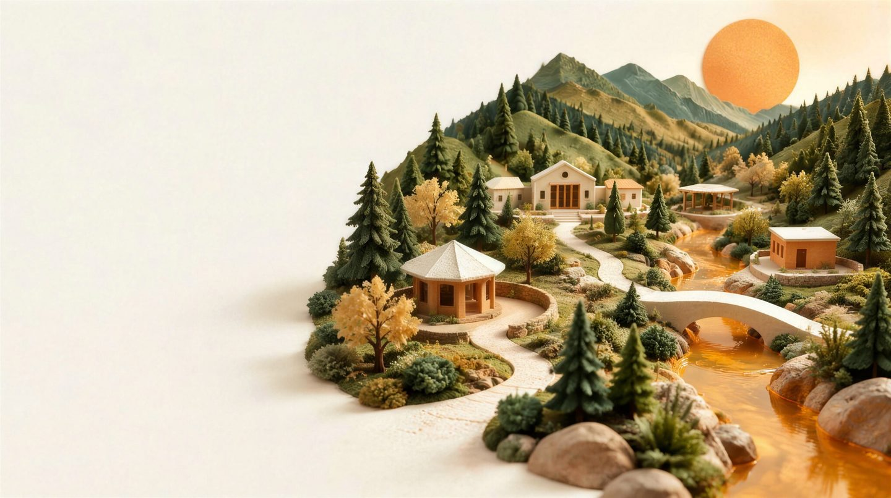

Everyone belongs here
Explore without creating an account. Share a link, print a guide, or save a few resources on this device.
This first collection focuses on Ashland and Jackson County. The name and design are a working starting point.
Ashland, Oregon · Here for each other
A meal. A fresh start. Someone who knows the way. Find your next step, right here in the Rogue Valley.
Open to everyone. No account needed.

Food on the table.A place to turn.A community beside you.
01 · Find your next step
Search, or choose a kind of help. Every listing links to the source it came from.
A starting point, with sources you can check. Hours and availability may change—confirm directly before traveling.
Try a broader search or explore the wider 211info directory.
Small connections. Stronger community.
See how a short provider report can help a community understand its needs.
Fictional sample data
This week so far
02 / Community Pulse
Every report lights a lantern. When providers share what happened at a meal, a shower or a conversation, the week becomes easier to see, and so do the places still waiting for a report.
Fictional demonstration. These are sample service amounts for one invented week. They are not Ashland statistics and do not count unique people. Approve a practice report to see the charts update in this tab.
This week so far. Numbers can change until the week is published. They count servings and visits, not unique people.
3 of 4 sample providers have reported this week.
Meals, shower sessions and navigation encounters use different units. They are shown one at a time and never added together.
The week, day by day
One column per day, October 19–25. Solid is counted, hatched is estimated. Days without an amount say why.
Selected day
Select a day for its amount or reporting status.
| Date | Counted | Estimated | Total | Sample eventsEvents reported | Status |
|---|
How much of the picture has arrived, how each amount was measured, and where reports noted that more support could help.
How much of the picture?
3 of 4sample providers reported
An unreported amount is unknown, never zero.
What is behind the total?
Estimates stay visible as estimates. Service amounts count servings and visits, not unique people.
A day without a bar is never treated as zero. Each one is marked with the reason, using the same marks as the chart.
Meals, shower sessions and navigation encounters have separate definitions. Counts of zero are shown as zero; blanks are explained, never filled in.
Corrections replace earlier amounts only after review. Approving a revised practice report swaps the old amount out instead of adding to it.
Reporting coverage includes only the fictional participating providers in this demonstration. Real publication will require provider permission and disclosure review.
Reporting coverage includes only providers who agreed to share their counts. It is not coverage of all providers in the county.
Take the sample data
A CSV with one row per unit. Unknown amounts are left blank, and every row is labelled FICTIONAL_DEMONSTRATION.
FOR THE PEOPLE SHOWING UP
Three quick questions after a service. A coordinator looks each report over before any number is shared.
Practice space — use made-up numbers. Nothing is sent to a provider or server. Reports stay in this tab and disappear on reload. Accounts and secure collection come in the next phase.
LOCAL KNOWLEDGE. SHARED CARE.
Built to make the next step easier for people seeking support and the people working alongside them.
Explore without creating an account. Share a link, print a guide, or save a few resources on this device.
This first collection focuses on Ashland and Jackson County. The name and design are a working starting point.
No accounts, trackers or survey submissions to a server in this preview. Saved resource IDs stay in this browser; clear them when using a shared device.
Public reporting will use approved aggregates. Individual service histories are outside the pilot.
How information is checked
Each resource links to its source. Website review and provider confirmation are different steps, and unknown requirements or availability stay marked as unknown.
Each listing is checked against a named public source — usually the provider’s website — with the review date shown.
A separate step. In this preview it is still pending for every listing.
Hours and space change. This preview is not a real-time availability service.
Designed for an adopting team
An adopting organization or team will set priorities, coordinate partners and maintain the service. Those ongoing roles have not yet been assigned.
The initial build is designed for a documented handoff, with a backup for each responsibility.
On a supported phone, add this site to your home screen. After your first online visit, the directory can be available offline. Always check the source date and confirm details before traveling.
Alerts are planned for a later phase. This preview does not subscribe you or send notifications.